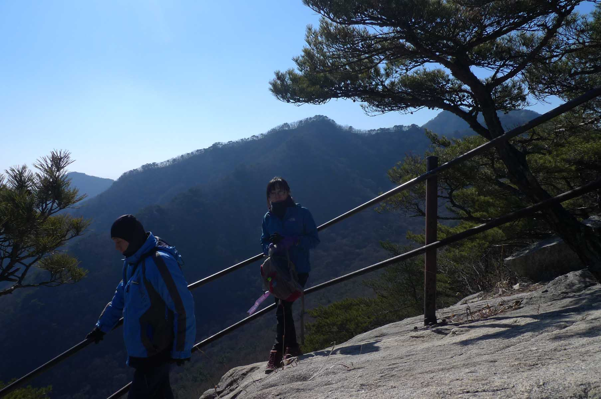

Introduction to the GyerYongSan (계룡산) Mountain Range

This is one of the truly great mountain ranges of Korea so it is no surprise that it has achieved
National Park status. There are many peaks spread across GyerYongSan National Park (계룡산국립공원) . Its name
(계룡) is derived from the view of the peaks that resembles a dragon with a rooster’s crown in the words
gye 계 (rooster) and yong 용 (Dragon). It was designated as Korea’s 2nd national park, after JiRiSan (지리산)
further south, in December 1968. Bounded by four cities including Daejeon, GongJu (공주), GyerYong (계룡)and
NonSan (논산) means it is accessible easily by public transportation in the case you wish to go up one
side and down the other. Famous for the beautiful view points from the peaks, which can be verified by
the reviews found on trip advisor, it is also the location of three famous temples, DongHakSa (동학사),
GapSa(갑사), and SinWonSa(신원사) which are all located within the bounds of the national park. An abundance
of natural resources including 3,619 animal and plant species with 11 endangered animal species
underscores the vital importance of preserving the mountain / valley ecosystem in a small but densely
populated country like South Korea. Within the Buddhist temples there are also a number of national
treasures associated with the Buddhist culture that are well worth viewing when you come to climb in the
mountains. Be aware this designation as a national park means that you cannot bring a pet, like a dog,
into the park and there will be a small fee to enter the park.
Which peak is highest?
The park consists of seven valleys and twenty eight peaks with the highest within the park being
CheonHwangBong (천황봉) at 845 meters in height. This means that it is far from being one of the higher
mountain ranges of Korea such as JiRiSan (지리산) and the TaeBeckSan (태백산) which are substantially higher,
but it makes up for this lack of height by having some of the most famous mountain views and nature
panoramas in Korea. Although CheonHwangBong (천황봉) measures as the highest peak in the National Park that
can be visited there is some controversy of the exact height of the mountain summit itself , GyeryongSan
(계룡산), which is shown as 846.4 meters height on naver maps (the Korean version of Google maps). This
mountain, outside the national park itself, is not open to the public as it is located in a military
restricted area which has been used for training soldiers.
Range of hikes
I have included a few of the many hikes that can be done in this mountain range. They cover the
different portions of the range and when you have completed all of them you will have a very good
understanding of why this is such a popular mountain range with hikers from across the nation. Meanwhile
there are other trails that you can hike and enjoy what this mountain range has to offer hikers. Look at
the maps included in the photo section for other hiking options. If you come on a weekend the easy
pathways around the temples will be filled with families and other visitors’ just out for a stroll or
having a picnic by the river soaking the summer rays, admiring delicate cherry blossoms or aweing at the
collage of nature’s finest autumn colors but not intent on climbing mountains.
GyerYongSan 1 (5 February 2012) NamMaetap (남매탑)
We met at KAIST and drove to the main entrance of this park which is a 20 minute drive from the KAIST
parking lot. The parking fee for the massive parking lot is 4000 won. Then we walked up the road between
the shops and food establishments to examine a giant-sized map of GyerYongSan national park (계룡산국립공원)
located opposite the far end of the parking lot. You needn’t worry about getting lost as it is a busy
route and there are many signs along the way. As a major entrance to the national park you will find
many amenities located here as well as the Cheonjeong Information center (천정탑방지원센터), the National park
office and a designated in-season camping ground.

After reviewing the hiking trail on the map, we walked along the path by a stream eventually turning
right up the hill and climbed at a moderate grade. The well-known women’s temple of DongHakSa (동학사)
mentioned in the introduction above is located just beyond the point where it is necessary to turn right
to reach NamMaetap (남매탑). Once on the path we followed the well-placed signs for SamBulBong (삼불봉) peak
which is 775 meters high. Eventually after a rather steep trail of rubble we reached the saddle between
two peaks. You know that you are near this saddle when you come to the stairs. At the saddle you bear
left on a moderate climb up to NamMaeTap (남매탑) where there are two Buddhist stupas located on a flat
area together with a small Buddhist temple known as SangWonAm (상원암). Look for the plaque explaining the
story of the two stupa at this historic location. Seeing as how there were many picnic tables at
SangWonAm, it was a convenient place to eat lunch which we did at 1 p.m. Normally, the view here is
partially obstructed by the trees but during winter with no leaves on the trees you get a better
perspective of the various mountains peaks around you.
Retracing our steps back
After lunch, we continued by hiking up a steep path with many stone steps that led to another saddle. At
this location we found ourselves very near to the peak. The end was nearly in sight as we turned left
following the steep path for the next 200 meters to the top. The views of SeoJong (세종), Daejeon and
GongJu (공주) are particularly excellent here but be sure to note the view of the GumGang River (금강) in
the distance. For orientation purposes there is a plaque that identifies the surrounding peaks of this
mountain range in the distance with their respective heights. Too soon relaxation was over and it was
time to return first to NamMaeTap (남매탑) and then we took the longer trail back. We passed through the
afore mentioned Buddhist temple of DongHakSa (동학사) and retraced our steps of earlier today on the road
back to the parking lot arriving at the car by 4:30 p.m. Returning to KAIST took about 30 minutes due to
the heavy afternoon traffic on this day. We also did this hike again both on the 14th of December 2014
and the 25th of February 2018 although many of the hikers have changed since 2012 as foreigners come and
go from Korea. Photos on this page are taken from our various hikes.
GyerYongSan (경룡산) Circuit hike and SamBulBong (삼불봉) (1March 2012)

Ask any avid hiker in Daejeon and they will concur that this is one of the great hikes in the Daejeon
area. In general, it is not an easy mountain to hike due to the rocky nature of the trails but it certainly
is a favorite mountain to explore because of both its history and the fine Buddhist temples around its
base. A total of five hikers met at KAIST at 9:30 a.m. We left one car at the end of the trail at GapSa
Temple (갑사) parking area and drove back to DongHakSa (동학사) Buddhist temple. Although I won’t go into too
much detail about the historical context of DongHakSa (동학사) it is certainly worth pointing out that
this temple is the oldest Bhikkhuni (female) monk temple in South Korea. Originally built in 724 (and
rebuilt many times since) during the Shilla dynasty it operates today as a study and teaching center for
the female monks. The atmosphere of the place does seem to bear witness to a woman’s touch with its
fragrant lotus flowers and tidy overall appearance. If you are interested in further reading about
Korean temples in English there are two books that will provide plenty of insight into several prominent
Korean temples. They are called “Korean temples: Temples from Korea’s Southeast corner” and Korean
temples: Art, Architecture and History”, both written by Dale Quarrington.
Rocky area
We started our journey up the first part of a relatively easy trail at 11:00 a.m. however the trail
became steeper as we approached the saddle where we arrived at 12:55 p.m. Then we hiked along a
moderately steep trail to the peak SamBulBong (삼불봉) (775 Meters) arriving at 14:00 p.m. This is the same
peak as when we went to NamMaeTap (남매탑) a month earlier but after leaving the peak this time we hiked
along the ridge. This is a very rocky area but with very well developed trails although it is still
difficult to transverse because of the boulders that must be maneuvered around. In anticipation of this
difficulty, the park officials had railings installed along the trail for protection because of the
cliffs adjacent to the trail.
Luckily, we managed to not fall off any cliffs and proceeded to hike along the GeumJanDiGoGae (금잔디고개),
GoGae (고개) means “hill or pass” which in this case is a ridge. At one point we were near to NamMaeTap
(남매탑) but did not go down to that location as it is a rather steep trail and we were doing a traverse.
We then continued over the ridge to the north side of the mountain where there was much snow and ice
requiring us to put on our crampons at 15:36 p.m. We finally reached the upper temple of the DongHakSa
(동학사) complex which is known as 심우정사 at 16:24 and again arrived back at the main temple below it at
17:00 pm. From there we drove around to where the other car was located and so ended a thoroughly
demanding but exhilarating climb leaving us eagerly anticipating our next visit to GyerYongSan National
Park (계룡산국립공원).
Summary of SamBulBong (삼불봉)
What makes this hike difficult is the rocky nature of the trail, number of other hikers as well as the
warm spring weather which meant that the trail in some places was muddy yet still ice and snow on the
north side of the mountain. At the same time the weather was very clear resulting in excellent panorama
views from the summit. As noted above this is considered one of the great hikes in the Daejeon area and
is highly recommended but at the same time be sure to start your hike early in the morning, especially
in fall and winter when the days are short. Personal experience has taught me this lesson well. Let me
indulge in a tale from hiking all the way back in 1996 before I was involved with Daejeon hikers…….
A Dark Tale
My wife and I were once caught in the dark on this very mountain with no flash light. It was in late
September during our first visit to Korea in 1996. We had started the hike around 3:00 p.m. and thought
that we would be able to return before dark as we were strong hikers. People warned us on the way up the
mountain but we did not heed their warnings. Just as the sun started to approach the horizon, we were on
the ridge. We quickly headed down the mountain but it was to no avail as darkness surrounded us faster
than we expected. Soon it was very dark and we were worried as I had not brought a torch on this visit
to Korea. It became more and more difficult to see the rocks and this mountain has only very rocky
trails. Unexpectedly, we encountered a young couple who seemed to be oddly unaffected by the dark.
Following them at a safe distance as they sang and laughed, we were greatly relieved when in the
distance there were lights and a soda machine. Fortunately, the rest of the way down had enough lights
that there was no difficulty in following the trail so there was a happy ending to my tale. But now,
lesson learned the hard way, I never go hiking without a flashlight and compass.
YeonCheonBong 740 meters (연천봉)
This peak is best reached from the SinWonSa Park Information Center (신원사탐방지원센터) Parking lot. From there
walk 300 meters along the road that leads to the temple by the same name SinWonSa (신원사). This modest
Buddhist temple was originally constructed during the Baekje (백제) dynasty but like most temples rebuilt
several times over the centuries. In particular there has been several renovations and additions since
1982, most notably the addition of the great bell and its accompanying pavilion built in traditional
Korean style to fit in with the rest of the complex. For a more complete history of this temple there is
signage in English, even if in this case it is behind a grill which makes the reading somewhat
difficult.
Choose a path
From this point the trail is dirt and goes for another 0.6 km to the major trail junction where you have
two choices of paths up to the peak. The detailed and easy to read map at the park entrance color codes
the paths based on difficulty of the path to assist you in choosing a trail that suits your abilities.
If you turn left there is a steep pitch up which leads to the DungUnAm (등운암) temple site and eventually
the peak. Or turn right as we did and follow the trail sign that points to GoWongAm (고왕암) which has a
rather easy pitch for 1.4 km until you reach the GyerYong (계룡) 06-04 marker. Continue to follow the
trail for an additional 0.7km to the intersection known as 연천봉고개, at which point the trail becomes steep but
there are stairs and you are only 200 meters from the YeongCheonBong peak (연천봉).
Down the opposite path
There are excellent views here on a clear day making the hike well worth the effort and toil suffered to
reach the peak. After picture taking and soaking up the views for as long as possible, it is time to
remember that what goes up must go down. This day the Daejeon hikers took down the opposite trail to
that which they took up bypassing DongUnAm Temple (등운암) which covers a distance of 2 km down the
mountain. The last 0.2 km of this trail was quite steep and led to the trail junction where we earlier
had made the decision to turn right to go up the mountain. Retracing our earlier steps it was an easy
walk of only 0.9 km now back to the parking lot.
Summary of YeongCheonBong (연천봉)
YeonCheonBong (연천봉) is another classic hike in this mountain range. My only complaint is the stairs. It
is just that I am not fond of stairs but I concede that surely the hike would be much more difficult
without them. Even though this is not a long hike the change in height between the bottom near the
temple and the top of the peak is substantial and accounts for the extended time required to accomplish
this hike so be sure to leave a whole day for the hike. This trail leads to the most extreme south
western portion of the GyerYongSan (계룡) Mountain range near to the city of Nonsan (논산시) rather than
Daejeon making it a less travelled than the Southeast entrance near to Daejeon which is well serviced by
public transportation from the city in addition to being well equipped with numerous restaurants and
vendors.
ShinSeonbong (신선봉) 649 meters Trail Description
This is a very peaked mountain and the trail leading up to it happens to be one of the more difficult in
this mountain range. In fact, it is listed as a trail of the most difficulty here in the mountains if
you refer to the color coded maps located throughout the park. However, there are ropes that are
judiciously located to assist with the difficult parts if the trail. During our arduous climb we
appreciated these aids and took advantage of them. It is a prime example how well this park is taken
care of by the Korean National Park Personnel and the seriousness Koreans take the challenge and thrill
of reaching the highest heights of the place they call “우리 나라” …our country.
GyerYongSan National Park
Large boulder
The trail begins at the end of the mountain village that is located near the entrance road to the
DongHakSa (동학사) Temple complex. You turn up the road to the right from the parking lot which leads up to
a park service building where personal will give you a map of the trails of the park if asked. At this
initial section the trail is moderate in slope, well-marked following a stream that leads up into the
mountains running all year long. It is a breathtaking valley with the sounds of the stream permeating
the air adding to the cool atmosphere. Soon you will see the large boulder that at one time a shaman
lived in titled 갓바위. Looking closely it is possible to see the signs of where the wooden walls once
stood. Beyond this the trail becomes steeper so have the hiking sticks prepared if you brought them with
you.
Following the ridge
Be sure to turn right at the trail intersection KunBaeJae (큰배재) where if you’re paying attention you’ll
notice a sign there for ShinSeonBong (신성봉), the peak you are going to climb. The trail eventually leads
to stairs as ending at the ridge where the many scrambles are encountered on a trail that leads over and
around many of the smaller peaks that dominate this ridge. Soon you will reach the most prominent of
these peaks called ShinSeonBong (신선봉) which stands proudly at 649 meters. By now you will be hungry from
the effort of all those ups and downs so relax, have lunch as you feast your eyes on the exquisite views
in all directions. In summer the summit usually offers a cool breeze at the peak and during cooler
seasons it can be a good place to warm up if you were lucky to manage a sunny day.
Beware of Surroundings
After hiking to the top of this peak the trail continues and this is where the adventure begins. Despite
the many boulders to climb over and plenty of steep drops to scramble down, all the difficult passes
have ropes to assist you on this journey. Be aware of your surroundings as you are on top of the ridge
and there are multiple cliffs before you so be careful not to walk too far off the trail. In keeping
with safety protocol, when the danger is high there are railings to keep you safe. Take a moment to
appreciate the difficulty that must have been experienced by the park personnel when they put these
barriers up in the past.
Heading back down

Continue along this trail until you come to the sign for the National Park Information Center. Follow
the trail for 0.2 km. Then turn right at JakUnPaeJae ((작은배재) for 0.8 km until you reach MoonKalSamKaRi
where you should turn down the trail that leads to the information center where you started the hike.
This trail is 1.7 km long but is very easy and eventually turns into a very wide path leading to the
information center building and the parking lot. This is a quite easy day hike despite the many
scrambles and it lets you experience all the various types of terrain that these mountains are famous
for. The only challenging part of the hike is the 1.7 km trail along the ridge.
JangGunBong (장군봉) 500 meters
The planning for this hike began as most Daejeon hiker group hikes begin, with an email from hiking
leader Jong Moo advising the group that, “The coming Sunday would be the perfect day to enjoy the autumn
colors”. To accomplishment this feat he suggested JangGunBong (장군봉) which is a steep, slightly difficult
peak in the eastern most part of GyerYongSan National Park. Not only did Jong Moo find the perfect
mountain to enjoy the last of the spectacular autumn colors as the date was near the end of October,
2016 but he kindly arranged a rather warm, sunny day for the 8 hikers who participated on this hike.
General (장군)
As mentioned for several of the other peaks in Gyeryongsan National Park (계룡산국립공원), there were several
steep areas but ropes were positioned as needed on the more difficult boulders to climb over. In such
situations distances are relative as 1 km may not seem far but when it involves some laborious hauling
yourself by rope up a rock face a 100 meters suddenly seems an extraordinary long distance. The large
boulders near the top also made for convenient places to sit, eat lunch and view the natural landscape
that seemed to stretch endless of forest, farmland, valley villages and other peaks. The name of the
peak, JangGun (장군) means general (the military term) in Korean. Apparently someone thought that the peak
resembled the shape of a general and so the name stuck.
Mountain spring
On the way back down the mountain we passed a small temple area, one of many small places of worship
scattered throughout these mountains. Typical of such places is a small stone alter with several
different styles of Buddha figures. Below is a stone box with 복전함 carved on it and a slit for slipping
money through if you feel so inclined as to make a donation. Often times at these small temples there is
access to fresh spring water coming down from the mountain and this place had a more elaborate spring
than usual. A stone dragon opened his mouth widely so the water could pour out into a large decorative
stone dish which in turn emptied out at the other end into a smaller stone dish. Feel free to have a
drink or refill your water bottle.